Each entry quotes the document exactly. None of these documents names a VIN, dealer order number or dealer for a specific car.
| Date | Document and quote | Image |
|---|---|---|
| Sep 26, 1968 | Car Distribution Bulletin 69-21, J. T. Wilson, Director of Car Distribution “a special GTO model named the “Judge”. Due to late engineering changes, this model will not go into production until approximately January 1, 1969.” Tier 2 · Documented fact | 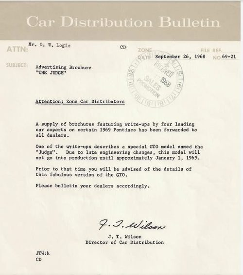 |
| Oct 31, 1968 | PMD Public Relations release “The first 5,000 units will be painted a special orange color and will have distinctive striping.” (car “yet to be named,” 350 H.O. engine) Tier 2 · Documented fact That it describes a planned car, not the Judge as announced: Corroborated interpretation | 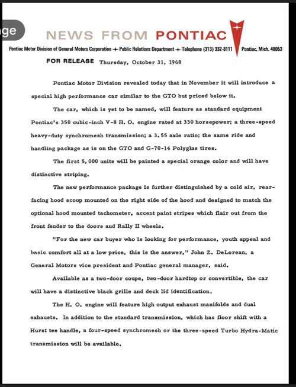 |
| Dec 11, 1968 | Agency Conference Report No. 869 (client: Pontiac Motor Division) “‘The Judge’ Announcement Promotion Package - SA 3091” Tier 2 · Documented fact | 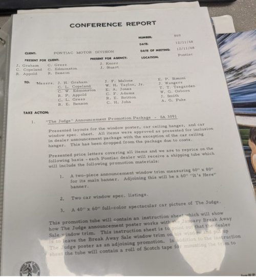 |
| Undated | “THE JUDGE by Pontiac Quick Reference Specifications” (filed with Conf. Report 869) “Test weight, pre-production car N.A.” Tier 2 · Documented fact Date: Unresolved | 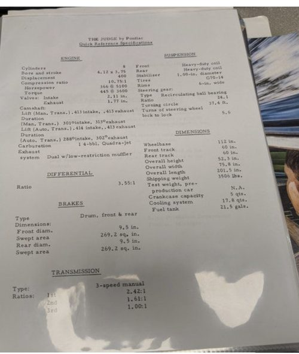 |
| Dec 12, 1968 | Car Distribution Bulletin 69-48, J. T. Wilson “production to start late January at all ‘A’ Assembly Plants”; “Color Carousel Red with Trim 257 Parchment or Trim 258 Black.” Tier 2 · Documented fact | 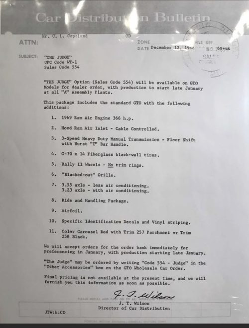 |
| Dec 19, 1968 | PMD release (Examiner reference library copy, stamped Dec 24, 1968) “The first production units will be painted a bright red.” Tier 2 · Documented fact | 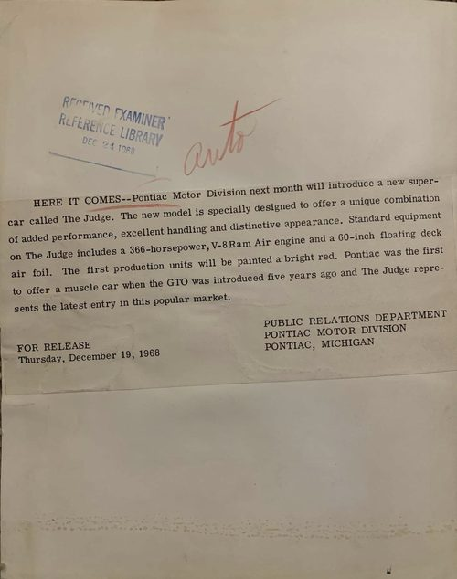 |
| Undated | PMD release, page 2 only “the first production units will be painted a bright red including the Endura energy-absorbing front bumper.” Tier 2 · Documented fact Date: Unresolved | 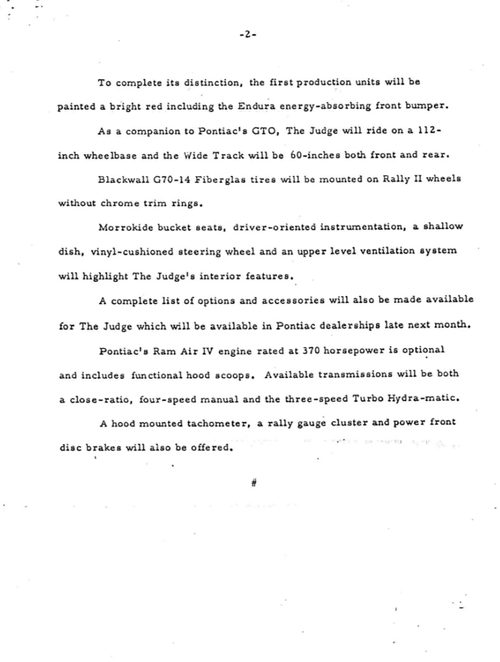 |
| Jan 2, 1969 | F. J. Gordon letter on accessories and option codes; page “Revisions to Oct. 29th Listing” “554-WT1 NEW OPTION TEMPEST” Tier 2 · Documented fact That this page is the letter’s attachment rests on owner identification. | 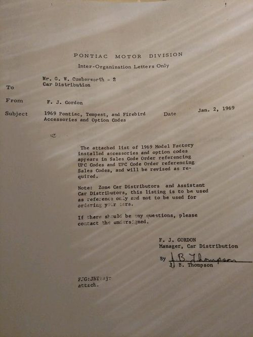 |
| Jan 14, 1969 | NEWS FROM PONTIAC price release “$3,493.02 and $3,719.02 for the convertible.” Tier 2 · Documented fact | 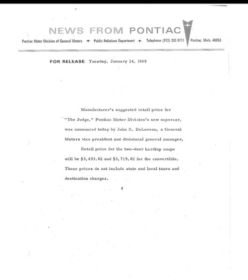 |
| Jan 14, 1969 | Car Distribution Bulletin No. 58, F. J. Gordon (rear antenna) “NOT AVAILABLE ON G.T.O. WHEN THE JUDGE OPTION CODE 554 UPC CODE WT1 IS ORDERED.” Tier 2 · Documented fact | 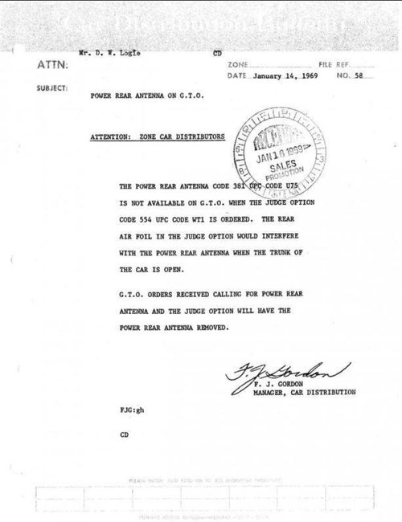 |
| Late Jan 1969 (printed Feb 2, 1969) | Boston Herald Traveler, “Pontiac ‘Judge’ is Here,” John Rooney “Twenty five of the new Carousel Red, hardtop coupes were assigned to dealers to be driven to their dealerships.” Tier 3 · Documented fact What the article reports; it names no VIN. | 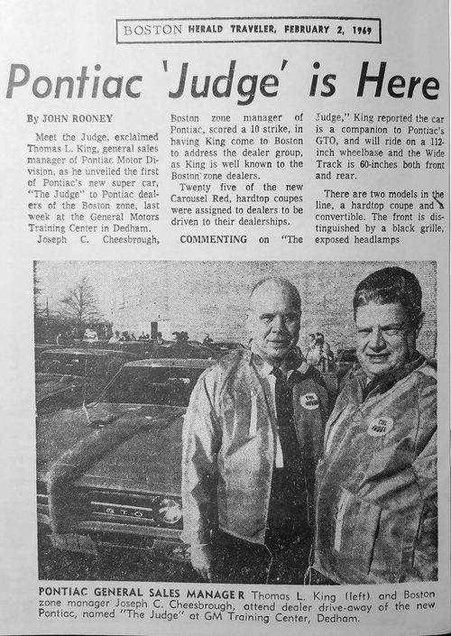 |
| Feb 20, 1969 | Kansas City Zone dealer message ZCD 13-9, Sam D. Emerick “we will now accept orders for the Judge in any released exterior color and trim combinations.” Tier 2 · Documented fact | 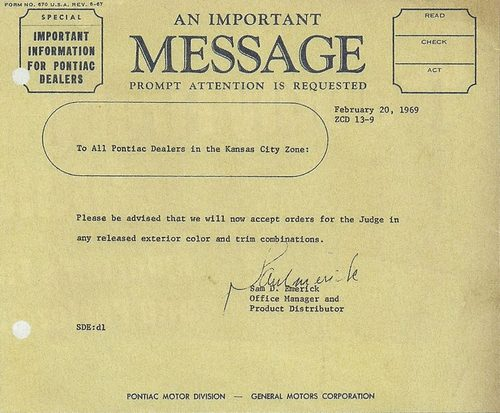 |
| Mar 31, 1969 | Car Distribution Bulletin 69-74, F. J. Gordon “‘THE JUDGE’ Decal & Stripe Usage” Tier 2 · Documented fact | 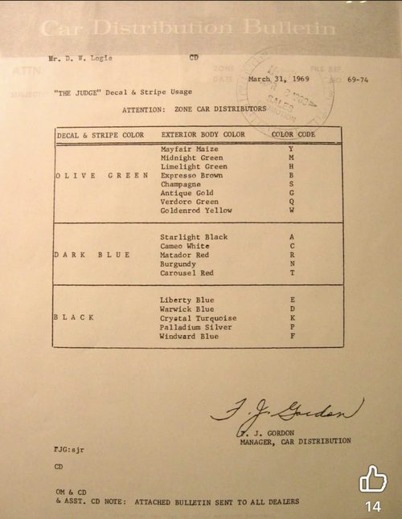 |
| May 8, 1969 | Memo, T. C. Goad to F. J. McDonald, “The Judge” (page 1) “started in mid January with 1,000 pattern cars being built in Carousel Red only” Tier 2 · Documented fact | 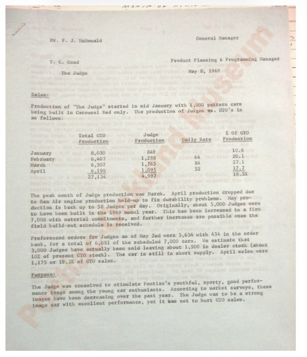 |
| Undated (1969 model year) | Judge sales brochure spread Lists the 400 Ram Air engine at 366 horsepower at 5100 rpm (paraphrase). Tier 2 · Documented fact Date: Unresolved | 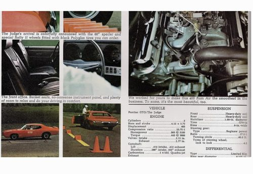 |
Not on file: page 1 of the undated release; page 2 of the Goad memo.
AI assistance was used to compile and format this site. Every claim was drawn from Al Diaz's research files and is labeled under his Research Standards & Evidence Policy v1.0. Corrections are welcome and will be dated.